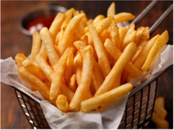

Patatas fritas
Receta de patatas fritas caseras

Ingredientes
3 o 4 patatas
4 dientes de ajo
Aceite de oliva
Sal
Elaboración (Pasos)
Calentar aceite en una sartén
Añadir las patatas cortas, la sal y los ajos
Freir al gusto
Servir en plato